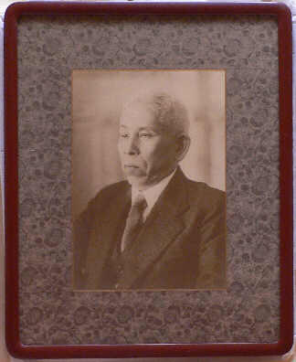

その他の画像
 |
洋装の明主様 額装、ガラスなし |
 |
御霊紙 いつ戴いたものか分かりません。 御昇天後から晴明教時代は、特別な浄化の際以外は御霊紙を出していないとのことですので、御在世中のものかと思われますが、定かではありません。 |
 |
開いたところ 見た目はただの和紙です。 （当たり前ですが） |
 |
御神体 光明如来御書 二体 表装前 御下付時の状態 一旦お願いをされて何らかの事情から御奉斎できずお預かりされていたもの |
 |
御書『必勝』 未表装 戦時中祖父が御下付戴いたもの |
 |
お守り様 父が拝受した「浄力」と当時の金襴の袋。 「光明」、「浄」は表装して扁額に。 |